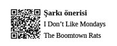

Bu kararsızlığının alçak ve yüksek basınç dengesizliklerine yansıyan çıktısı olan rüzgâr da; asice, ne yaptığını bilmeden bir oraya bir buraya gidiyor, hem insanların sıkıntılarını hem de sonbaharın kışa karşı son direnişini simgeleyen yaprakları silip süpürüyor...
Eskiden kenara koyduğu paralarla hedeflenmiş tatiller yapardı. Şimdilerde altın vuruşların yerini sık sık ama devamlı, küçük nefes dozları aldı. İstanbul’a yakın, sakin ve sezon dışı beldeleri tek tek gezmeye koyulmuştu son zamanlarda. Dalgaların sesinden başka bir aksin duyulmadığı bu sazlık, rüzgârlı günbatımına karşı yaktığı son sigara; işte perdeye düşen bir kapanış daha... Yalın, illüzyondan uzak tatil ortamında geçirdiği, kelimelerin yetersiz kalacağı o tarifsiz anlardan sonra yine esaretin zincirini boynuna takmak üzere yollara koyuldu.
Metropoller; Berk gibi boynu zincirli profesyonel köleleri, dayanılmaz cazibeleriyle mıknatıs gibi çekiyor. Çekerken de kulağına:
“Hadi kardeşim yürrrü, yarın iş başı yapacaz. Daha eve gidecez, banyo yapacaz... Kıyafetler ayarlanacak. Hafta sonu gelen mail’ler cevaplanacak. Toplantı notları gözden geçirilecek. Sunuma son bir kez göz atılacak vs” şeklinde fısıldıyorlar.
Bütün güzel tatil anıları, yola çıktığı ilk dakikalardan itibaren bu insafsız fısıltılarla tüketiliyor...
Halbuki onları bir dahaki tatile kadar saklamak için, hissiyat cüzdanının en derin ceplerine itina ile yerleştirmişti. Ancak, metropollerin evrensel çekim kuvvetinin ana hatları olan kitlenmiş otobanlar, uzun feribot kuyrukları, kontak kapattıran köprü girişleri, sinyalsiz şerit değiştiren terliksi hayvanlar gibi detaylar güzel tatil anılarını çoktan tüketmeye başlamıştı bile.
Tam rahatlamıştı, huzuru bulmuştu derken, huzurunun ırzına geçmek için bir grup tecavüzcü peydahlanmıştı, zihninde...
Bir yandan bu huzur tecavüzcülerini düşünürken bir yandan da ertesi günün gulyabanileri musallat olmuştu zihnine.
Yine maskesini takacak, ertesi sabaha Berk Bey olarak uyanıp, sabah kahvaltısını ucuz yağlı bir poğaça ile ikame edip, iş tanımının evrensel gerekliliklerini yerine getirecek.
Yine pazartesi sabahı...
Yine saat 06:00...
Alarm çalıyor. Hayır, alarm çalmıyor, bedeninin birikmiş yorgunluğu artık bastıra bastıra şuuraltına ittiği isyanın sesini de bilinmeyen bir dile tercüme etmiş, yeniden anladığı dile çevirecek bir tercüman da bulamadığı için geceden sabaha dünyanın tüm seslerini aynı noktaya topluyor, topluyor, topluyor... Ukdelerin toplamı olarak bu alarm sesi derin bir çınlamadan bütün bir odayı, sonra zihnini, sonra tüm dünyayı dolduran bir boşluğa dönüşüyor... Çalan alarm mutluluk evreninden gerçeklik evrenine bir geçit rolü oynuyor. Berk, olayı paralel evrenler arasında daha da kompleks bir hale getirmeden, yani mecburen yataktan kalkıyor...
Tuvalet süreci, sabah kalkma ritüelleri arasında global olarak vazgeçilmezliğini koruyor.
Metropollerde, sabah kalkma ritüellerinde önemli bir yer tutan tuvalet sürecinde Foursquare’de sağa sola check-in olanlara, günün ilk tweet’ini atanlara sıklıkla rastlanıyor.
Kıl büyütme özgürlüğünü elinden alan tıraş seremonisi akabinde, ciltler kadar ruhlar da tahriş oluyor.
Halet-i ruhiye müsait ise kıyafetler akşamdan özenle seçilmiş, gerekli kombinasyonlar gerçekleştirilmiş ve giyilmeye hazır bir durumda bekliyor. Ancak iç dünyasının huzuru buna müsaade etmemiş ise, sabahın köründe, kör ışıkta kombin yapma çabası gerçekten acı verici bir süreç halini alıyor. Kör ışıkta yapılan kombin, daha önce edinilmiş pratik deneyimlerden yola çıkılarak hızlı ve özensizce tamamlanıyor:
“Bu ceketle hep bu pantolonu giyerim. Bu ceket ve pantolonu giydiğimde şu kravatı ve bu kemeri takarım. Ayakkabım da şu olur. Ortam uygunsa bu mendil de gider...” Hazır kıyafet kütüphanelerinden devşirdiği günlük kombinler, tembellik ve salaklık iç eleştirileri ile birleşince o günü rezil edebilir. Hayır, buna izin veremez. Bugün önemli buluşmalar onu bekliyor olacak.
Çanta hazırlama sürecinde bilgisayar her zamanki gibi kral tahtına otururken, defter, kalemlik, telefonlar, anahtarlar, işe giriş kimlik kartı çantada kendileri için önceden hazırlanmış yerlerini alıyorlar.
Saç baş derlenip toplanıyor, mümkünse el yüz ve başın ilgili kremlerle günlük münasebeti sağlanıyor.
Yaş ilerledi, düzenli yutulması gereken haplar var. Aç karnına alınması gereken haplar alınıyor, kahvaltı masası ile uzaktan göz göze gelinip kendisine bir daha görüşmemek üzere veda ediliyor. Kimisi kahvaltısız yapamaz, ancak Berk gibiler de kahvaltı ile kalkar kalkmaz yüzleşmek istemiyor. Vücut uyanma sürecini tamamlayıp acıkma belirtilerini göstermeye başladığında kahvaltı ihtiyacı ancak ortaya çıkıyor.
Ayakkabıların son durumu nasıl? Boya ihtiyaçlarından bahsettiler mi? Bahsetmişlerse onları üzmemek gerek. Zaten bütün gün saçma sapan yollar ile uğraşıyorlar, temiz olmak onların da hakkı. Ayakkabılara da hakkını verdikten sonra ver elini sokak...
Servis bekleme mekânına doğru ilerliyor. Servis bekleme mekânında herkesin servis beklediğini görmek, aynı saatte, aynı insanları, aynı hareketleri yaparken görmek adeta zamanın durduğu bir an. Herkes yerli yerinde, birazdan olacaklar ve sonrasındakiler o kadar belli ki, servis sanki bir canlı cenaze arabası, yolu ve istikameti belli olmanın getirdiği tekdüzelikle beklemek fiiline odaklı o birkaç dakikayı tecrübe etmeye başladı işte yine.
Geç kalıp kalmadığını yanda servis bekleyen, sürekli rengârenk giyinen öğretmen abladan anlıyor. Herkes birbiri ile selamlaşıyor. Nazik ve samimi bir ortam.
Servis gelince herkes temkinli, emin ve hızlı adımlarla servise doğru yöneliyor. Hafif bir yer kapma çabası yok değil, ama nezaketten kimse bu hevesini belli etmemeye çalışıyor. Zaten bazılarının yeri önceden belli. Bazıları ise yeni gelmiş, bir yer belleme çabasında... Bazıları iki kişilik koltukta yalnız başına oturuyor, yeni biri binerken diğer tarafa dönerek çantası, ceketi, paltosu vs ile ilgileniyor. Yeni binen kişi müsait mi demediği sürece bu aktivite devam ediyor. Peki ya müsait mi denirse? O zaman istemeyerek de olsa yana doğru kayılıyor, nefes veren bir tonlama ile “buyrunnn” deniyor. Servis yaz aylarında sıcak kış aylarında soğuk. Servis şoförü nedense klimayı açmayı kendine zul olarak görüyor. Yolculardan biri yüksek sesle klima konusunu gündeme getirince üfleye püfleye klima açılıyor, hemen herkes klimayı kendine göre ayarlama operasyonuna geçiyor.
Yol esnasında uyumayı tercih edenler çoğunlukta. Gün içerisinde muhtelif beyaz yakalar takan kibar bay ve bayanların uyurken ağızlarının aldığı şekiller bireysel marka yönetimleri açısından büyük bir handikap oluşturuyor. Uyumayı tercih etmeyenler genelde radyo dinliyorlar (haberler, slow müzik vs) daha da azınlıkta kalanlar ise kitap okuyanlar. İşin özünde sorsanız herkes kitap okuyor ama maalesef çantadaki kitaplar uyku karşısında biraz dirençsiz kalıyorlar.
İş yerine gelince (ya da gelmeden hemen önce) önemli ritüellerden biri, kahvaltılık bir şeyler almak. Genelde simit, açma, poğaça, kepekli sandviç tercih ediliyor. Börek alanlar azınlıkta. Alınan kahvaltılıklarla asansör sırasına girme süreci başlıyor. Selamlaşmalar, kahvaltı davetleri, öğle yemeği davetleri, işler hakkında statü alma eylemleri asansör sıralarının vazgeçilmez hareketleri arasında yerini buluyor.
Herkes yerine yerleşiyor. Farklı farklı kahvaltı timleri bir araya gelerek ortak kahvaltı sürecini deneyimliyorlar. Kahvaltı esnasında bazıları diğerlerine hizmet ederken, bazıları da salt yiyici olarak görevlerini ifa ediyorlar. Hizmetkârlar, kahvaltı için gerekli hazırlıkları temin edip (tabak, çay, çatal, peçete, ekstra sandalye vs) salt yiyicilerin değerli geribildirimlerini dinliyorlar (peynir eksik, peçete yok, olm bu simit bayat vs).
Kısa süren kahvaltı süreçleri günün ilk toplantısından önce yapılması gereken hazırlıklardan dolayı sonlanıyor. Herkes tırıs tırıs yerrine geçiyor... Gelen email’lere hızlıca ve gönderenin pozisyonuna bağlı olarak sıralamak şartıyla bakılıyor. Önce amirimden ve üzerinden gelen mail’ler, sonra “to”da bana gelenler, bir ara müsait olduğumda da “cc”de yer aldığım mail’ler...
Toplantı hazırlıkları tamamlanıyor, şık bir iPad, şık bir kılıf, şık bir kartvizitlik, dik bir yürüyüş...
Toplantılar!...Veee mesai başlıyor...